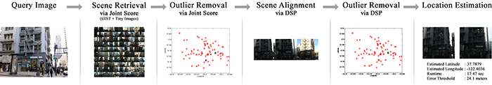
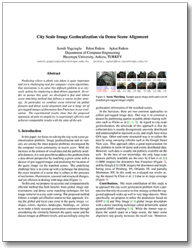
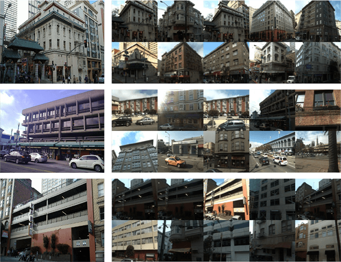

WACV 2015: IEEE Winter Conference on Applications of Computer Vision
|  |
Predicting where a photo was taken is quite important and yet a challenging task for computer vision algorithms. Our motivation is to solve this difficult problem in a city-scale setting by employing a data-driven approach. In order to pursue this goal, we developed a fast and robust scene matching method that follows a coarse-to-fine strategy. In particular, we combine scene retrieval via global features and dense scene alignment and use a large set of geo-tagged images of downtown San Francisco in our evaluation. The experimental results show that the proposed approach, despite its simplicity, is surprisingly effective and achieves comparable results with the state-of-the-art.
|  |
S. Yagcioglu, E. Erdem, A. Erdem. City Scale Image Geolocalization via Dense Scene Alignment. The WACV 2015: IEEE Winter Conference on Applications of Computer Vision, Hawaii, USA, January 2015
@inproceedings{yagcioglu2015city,
author = {Yagcioglu, Semih and Erdem, Erkut and Erdem, Aykut},
title = {City Scale Image Geolocalization via Dense Scene Alignment},
booktitle = {Applications of Computer Vision (WACV), 2015 IEEE Winter Conference on},
year = {2015},
organization = {IEEE}}
For comments and questions, please contact Semih Yagcioglu.
The documents contained in these directories are included by the contributing authors as a means to ensure timely dissemination of scholarly and technical work on a non-commercial basis. Copyright and all rights therein are maintained by the authors or by other copyright holders, notwithstanding that they have offered their works here electronically. It is understood that all persons copying this information will adhere to the terms and constraints invoked by each author's copyright. These works may not be reposted without explicit permission of the copyright holder.